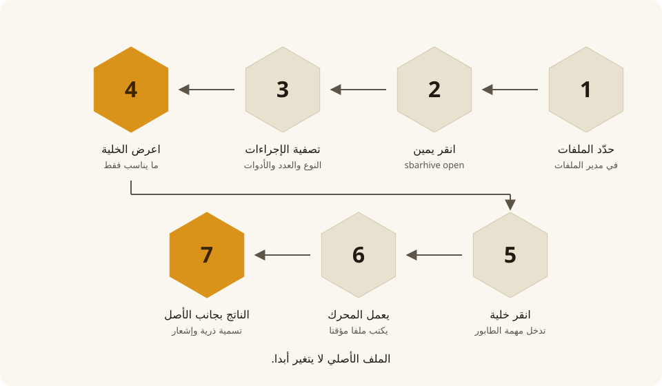
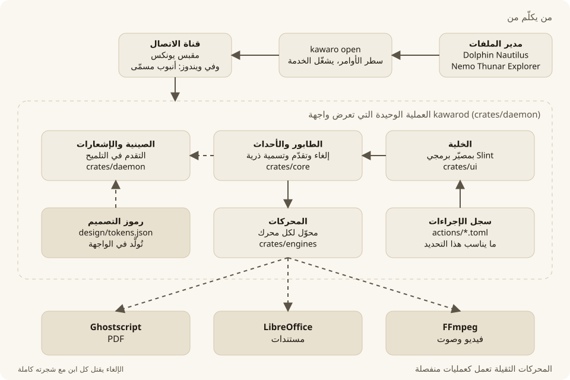
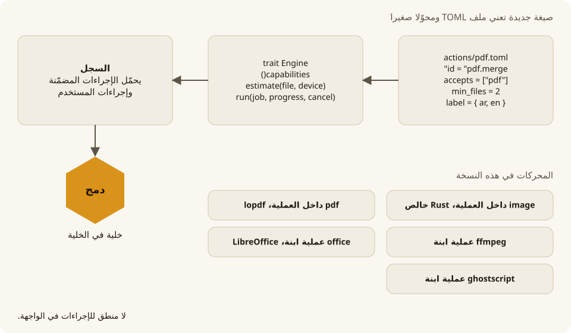
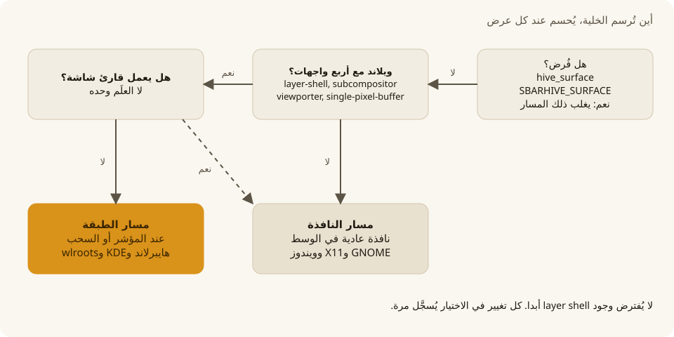
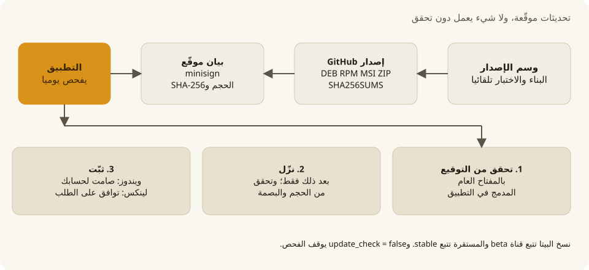

كيف يعمل
خدمة واحدة تعرض الواجهة. وعميل خفيف بسطر الأوامر يطلب منها فتح الخلية.

الأجزاء

- الخدمة
kawarodفيها الخلية والطابور والصينية والمحركات. - FFmpeg وLibreOffice وGhostscript تعمل كعمليات منفصلة، وتُقتل مع شجرتها كاملة عند الإلغاء.
- الملف الأصلي لا يتغير: يُكتب الناتج في ملف مؤقت ثم يُعاد تسميته.
إضافة صيغة

أين تُرسم الخلية

التحديثات
